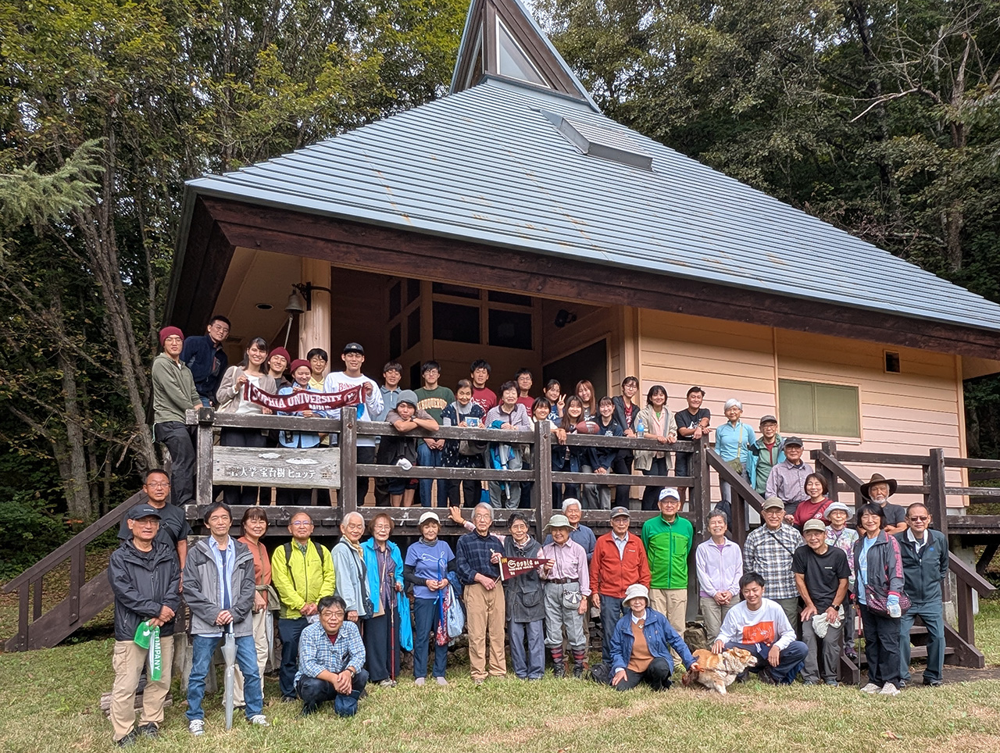
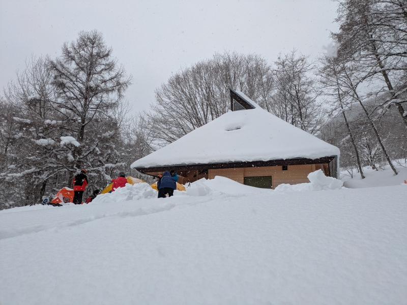

宝台樹ヒュッテ
宝台樹ヒュッテは、1963年にワンダーフォーゲル部が建設しました。
現在は5月の新歓合宿、2月のスノーシューハイクや雪上訓練で使用しています。


上智大学 宝台樹ヒュッテ
〒379-1721 群馬県利根郡みなかみ町藤原3832-13
Tel: 0278-75-2215
交通アクセス
【公共交通機関をご利用の場合】
JR上越線「上野駅」→「水上駅」下車
「湯の小屋・宝川温泉行」バス乗車（約40分）→「武尊橋（ほたかばし）」バス停下車→徒歩約50分
※バスのお問い合わせ：関越交通(株)水上営業所 0278-72-3135
【自家用車をご利用の場合】
武尊青少年旅行村駐車場（有料）に駐車→徒歩約15分